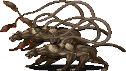
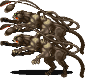
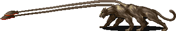
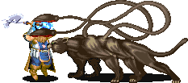
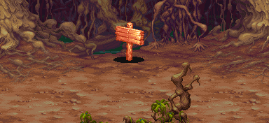
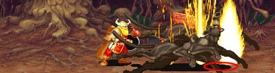

DISPLACER BEAST
|  파괴의 숲 (스테이지 7) 보스 '디스플레이서 비스트' |
기본 정보
클리어 시간 측정의 시작 시점
디스플레이서 비스트가 모습을 보이는 순간 부터
최단 시간 클리어 기록
시프 4:41 |
|||||||||

드랍 가능한 아이템 - 돈 + 점수 아이템 + 그외 아이템의 구성으로 떨어진다.
돈 : 10sp x1 + 1sp x5 (15sp) / 10sp x2 + 1sp x5 (25sp) / 5sp x5 (25sp) / 50sp x1 (50sp)
| 점수 아이템 : | |
| 도구류 : | |
| 기타 : |
6개의 다리와 2개의 촉수를 지닌 깡마른 짐승이다. 자신의 주위를 빛을 굴절시키게 만들어 상대의 눈을 현혹시켜 정확한 위치 파악을 힘들게 만들기 때문에 모든 공격에 대해 50%의 실패 확률을 유발한다. 또한 장거리 공격에 대해 강한 저항력을 지니고 있다.
이 게임상에서는 룰상의 모습보다 좀 더 약화 됐다. 분신을 만들어 플레이어를 혼란시키려 들지만 파악하기 쉽다. 패턴을 알고나면 비스트 자체는 어렵지 않으나 오히려 같이 나오는 고블린이 입에서 (10할) 같은 거친 말이 나오게 만들 것 이다.
이 게임상에서는 룰상의 모습보다 좀 더 약화 됐다. 분신을 만들어 플레이어를 혼란시키려 들지만 파악하기 쉽다. 패턴을 알고나면 비스트 자체는 어렵지 않으나 오히려 같이 나오는 고블린이 입에서 (10할) 같은 거친 말이 나오게 만들 것 이다.
디스플레이서 비스트의 가죽
보스들이 떨구는 아이템 중에서 가장 유용하다. 모든 장거리 공격 무기로 부터 보호 받을 수 있는 디스플레이서 망토를 만들 수 있기 때문이다. 시간이 급한게 아니면 꼭 얻도록 한다.
룰상의 디스플레이서 비스트가 장거리 공격에 대해 저항력을 가지고 있기 때문에 그 설정을 따온 듯 하다.
룰상의 디스플레이서 비스트가 장거리 공격에 대해 저항력을 가지고 있기 때문에 그 설정을 따온 듯 하다.
클리어 시간
모습을 보이지 마자 시간이 흘러가는데 등장하고서 꽤 한참동안 이리저리 날아(?) 다니기 때문에 시간 낭비가 많은 편이다. 그래서 경우에 따라 실수가 좀 있으면 4분대의 기록을 내기 힘들 수도 있다.
패턴 분석
※ 붉은색은 파이터가 입는 데미지, 푸른색은 매직 유저가 입는 데미지.
클레릭/드워프는 파이터에 가까운 데미지를, 시프/엘프는 매직 유저에 가까운 데미지를 입는다.
클레릭/드워프는 파이터에 가까운 데미지를, 시프/엘프는 매직 유저에 가까운 데미지를 입는다.
| displacement | |
|  | 룰상에서의 적의 눈을 현혹시키는 능력을 반영한 패턴으로 점프를 하면서 위 아래로 두 마리의 비스트가 분리된다. 물론 한쪽은 허상이며 그림자가 안보이기 때문에 어느쪽이 진짜인지는 금방 구분되며 직접 공격을 명중시키면 사라진다. 데미지 판정이 전혀 없어서 위험 할 것이 없다. 만약 룰에 좀 더 충실해서 허상에도 그림자가 있었다면 이 보스의 난이도는 훨씬 올라갔을 것 이다. |
| 촉수 공격 (17/25) | |
|  | |
플레이어가 정면에 있을 경우 등에 있는 촉수를 내뻗는다. 가드가 가능하지만 리치가 무척 길고 빠르기 때문에 정면에 있다면 맞을 확률이 높다. 또한 정면에 있는 한 연속으로 공격이 들어오기 때문에 위 아래로 빠지지 않는 한 연속으로 두둘겨 맞을 수 있다. |
|
| 물기 (25/25) | |
|  | 플레이어가 정면에서 가까이 있다면 물어버린다. 공격하는 도중이라도 약간의 틈이 있다면 물려버릴 수도 있다. 고블린과 같이 몰아서 때릴 때 특히 물릴 수 있으니 주의. 판정이 강하고 넓기 때문에 비스트의 정면으로 가는 것은 절대 금물이다. 모든 물기 공격이 그렇지만 가드도 안된다. |
| 이동 패턴 | |
| 디스플레이서 비스트는 걷거나 달리지 않고 낮은 점프를 하면서 뛰어 다닌다. 점프 속도가 꽤 빠르기 때문에 위치 변화가 빠른 편이다. 접근을 할 때 유의 할 필요가 있다. | |
| 백스텝 | |
| 플레이어가 정면으로 접근해서 공격을 하려 하면 뒤로 풀쩍 뛰어 오른다. 그 후에 아주 빠르게 촉수 공격이나 물기 공격이 나오니 비스트의 정면으로 쫓아가는 건 '나좀 잡아주쇼' 하는 꼴이 되고 만다. 그러니 비스트가 백스텝으로 회피 한다면 무리하게 쫓아가지 않도록 한다. |
|
| 대점프 | |
| 화면 구석에 몰려 있다면 반대편으로 크게 점프를 한다. 얼른 쫓아가면 뒤를 잡을 수 있으니 상황을 봐서 대점프를 유도하는 것도 괜찮다. | |
지원군
고블린들이 지원 공격을 한다. 절묘하게 들어오는 오일 투척, 돌팔매질, 점프 공격등이 플레이어의 분노게이지를 무한대로 끌어올리게 한다. 그뿐만 아니라 비스트와 겹쳐서 맞으면 재수없으면 비스트에게 물리기 까지 한다. 얼마나 매끄럽게 클리어 하느냐는 비스트와의 싸움 자체 보다도 이녀석들을 어떻게 잘 넘기냐가 관건이라 볼 수 있다.
| 1인 플레이시 | |||||||||||
| → | .gif) |
→ | |
→ | → | ||||||
| x 2 | x 1 | x 2 | x 1 | x 2 | |||||||
|
→ | |
→ | → | → | |
|||||
| x 1 | x 2 | x 1 | x 2 | x 1 | |||||||
한쪽에서 고블린 2마리가 나오면 잠시 후 반대편에서 1마리가 더 나와서 화면에 총 3마리까지 돌아다닌다. 이들을 전부 물리치면 다시 '한쪽에서 고블린 2마리 → 반대편에서 1마리 추가'의 패턴이 총 5번 반복된다. 한가지 팁이라면 처음에 나오는 고블린 2마리를 물리치고 나중에 나오는 1마리를 없애지 말고 냅두면 화면상에 고블린 1마리만 유지 시킬 수 있다. |
|||||||||||
| 2인 플레이시 | |||||||||||
| → | |
→ | .gif) |
→ | |
→ | → | .gif) |
→ | ||
| x 2 | x 1 | x 3 | x 2 | x 1 | x 3 | ||||||
| → | |
→ | |
→ | |
→ | → | |
→ | ||
| x 2 | x 1 | x 3 | x 2 | x 1 | x 3 | ||||||
| → | |
→ | |
||||||||
| x 2 | x 1 | x 3 | |||||||||
1인 플레이시의 형태에서 고블린 3마리를 제거시 오일을 투척하는 고블린 3마리가 추가 됐다. 마찬가지로 나오는 고블린 2마리를 물리치고 나중에 나오는 1마리를 없애지 말고 냅두면 화면상에 고블린 1마리만 유지 시킬 수 있다. |
|||||||||||
| 3~4인 플레이시 | |||||||||||
| → | |
→ | |
→ | |
→ | → | |
→ | ||
| x 3 | x 1 | x 3 | x 3 | x 1 | x 3 | ||||||
| → | |
→ | |
→ | |
→ | → | |
→ | ||
| x 3 | x 1 | x 3 | x 3 | x 1 | x 3 | ||||||
| → | |
→ | |
||||||||
| x 3 | x 1 | x 3 | |||||||||
2인 플레이시의 형태에서 고블린 3마리 → 1마리의 형태로 바뀐다. 총 4마리가 돌아다니는 셈이다. 처음의 3마리를 제거하면 1마리만 유지 할 수 있다. |
|||||||||||
참고 사항
오거 마스터 형제와 마찬가지로 디스플레이서 비스트도 쓰러졌을 때 중단 공격이 전부 통한다.
파이터, 시프, 엘프의 12연사나 파이터, 엘프의 A+B등이 전부 통한다는 뜻이다. 그러나 고블린의 견제가 워낙 심해서 엘프의 A+B를 이용한 공략법을 제외하면 쓰기가 무척 힘들다.
파이터, 시프, 엘프의 12연사나 파이터, 엘프의 A+B등이 전부 통한다는 뜻이다. 그러나 고블린의 견제가 워낙 심해서 엘프의 A+B를 이용한 공략법을 제외하면 쓰기가 무척 힘들다.
공통 공략법
◎ 팻말 미리 읽기
디스플레이서 비스트와의 싸움 도중에 실수로 스샷에 보이는 팻말을 읽을 수도 있다. 읽는 동안은 움직이지 못하니 공격당하기 딱 좋다. 따라서 시간이 여유가 있다면 미리 읽어두는게 이런 사태를 막을 수 있다.
◎ 본체 파악
시작하자 마자 분신을 만들어내기 때문에 재빨리 그림자가 있는 쪽이 어느쪽인지 판단하는게 중요하다.
위/아래로 랜덤하게 나오기 때문이다. 만약 금방 구분을 못했다면 이후의 공략이 많이 꼬일 수 있다.
◎ 쓰러진 비스트를 공격할 때
절대로 머리쪽에서 공격해야 한다. 꼬리쪽이나 중간에서 공격하면 일어나자 마자 물기공격을 할 수도 있고 백스텝 후 촉수공격이 나올 수도 있다. 머리쪽에서 공격하면 일어나자 마자 뒤로 돌았다가 다시 앞을 보기 때문에 위험 없이 공격할 수 있다.
◎ LB오일 이용
아직 상점에서 파는 시기는 아니지만 시프가 아니더라도 LB오일을 1~3개 모아올 수 있다. 이를 이용하면 디스플레이서 비스트를 좀 더 빨리 잡을 수 있다. 적절한 투척 위치는 아래 그림을 참고.
◎ 고블린 제거
위에서도 이야기 했듯이 초반에 나오는 2마리의 고블린(3~4인은 3마리)을 제거 하면 화면상에 1마리만 돌아다닌다. 고블린이 너무 신경 쓰인다면 2마리만 제거 해 두면 좀 더 수월하게 싸울 수 있다.
디스플레이서 비스트와의 싸움 도중에 실수로 스샷에 보이는 팻말을 읽을 수도 있다. 읽는 동안은 움직이지 못하니 공격당하기 딱 좋다. 따라서 시간이 여유가 있다면 미리 읽어두는게 이런 사태를 막을 수 있다.

◎ 본체 파악
시작하자 마자 분신을 만들어내기 때문에 재빨리 그림자가 있는 쪽이 어느쪽인지 판단하는게 중요하다.
위/아래로 랜덤하게 나오기 때문이다. 만약 금방 구분을 못했다면 이후의 공략이 많이 꼬일 수 있다.
◎ 쓰러진 비스트를 공격할 때
절대로 머리쪽에서 공격해야 한다. 꼬리쪽이나 중간에서 공격하면 일어나자 마자 물기공격을 할 수도 있고 백스텝 후 촉수공격이 나올 수도 있다. 머리쪽에서 공격하면 일어나자 마자 뒤로 돌았다가 다시 앞을 보기 때문에 위험 없이 공격할 수 있다.
◎ LB오일 이용
아직 상점에서 파는 시기는 아니지만 시프가 아니더라도 LB오일을 1~3개 모아올 수 있다. 이를 이용하면 디스플레이서 비스트를 좀 더 빨리 잡을 수 있다. 적절한 투척 위치는 아래 그림을 참고.

◎ 고블린 제거
위에서도 이야기 했듯이 초반에 나오는 2마리의 고블린(3~4인은 3마리)을 제거 하면 화면상에 1마리만 돌아다닌다. 고블린이 너무 신경 쓰인다면 2마리만 제거 해 두면 좀 더 수월하게 싸울 수 있다.